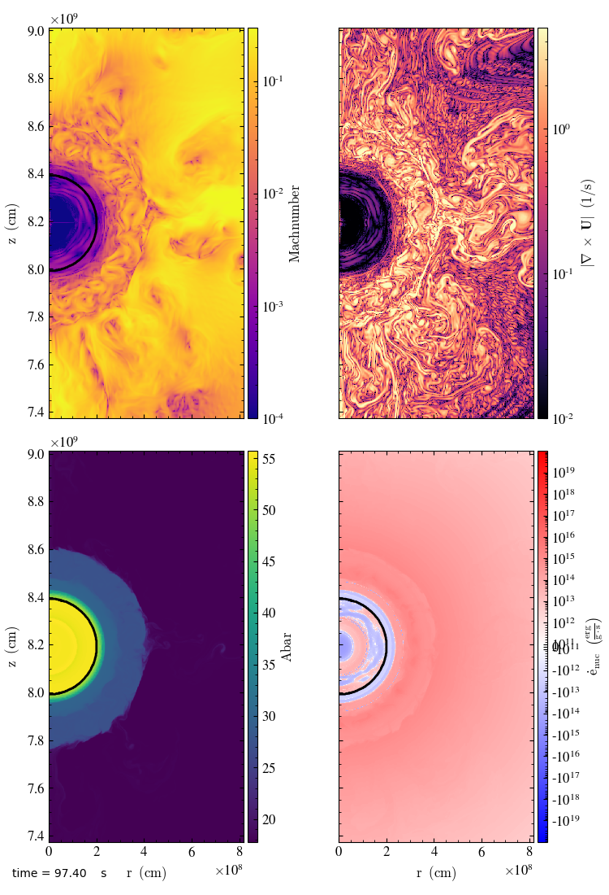

Simulations of Convection in Massive Stars
We've developed a new time-integration algorithm that combines our simplified-SDC method with an on-grid network and NSE table to allow for efficient modeling of massive stars leading up to core collapse.

publications
- Strong Coupling of Hydrodynamics and Reactions in Nuclear Statistical Equilibrium for Modeling Convection in Massive Stars, Zingale, Michael, Chen, Zhi, Johnson, Eric T., Katz, Max P. & Smith Clark, Alexander, 2024, submitted to ApJ